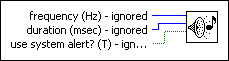

Beep (Mac OS X, Linux) VI
Owning Palette: Graphics & Sound VIs
Requires: Base Development System (Linux, OS X)
Causes the system to issue an audible tone.
LabVIEW ignores the parameters of this VI. They appear on Mac OS X and Linux for compatibility reasons.
 | Note (Windows) This VI ships on the Windows platform for compatibility reasons only and does not appear on any Functions palette. Use the Beep VI on Windows, found on the Graphics & Sound palette, to build VIs that incorporate the beep sound on Windows. |
